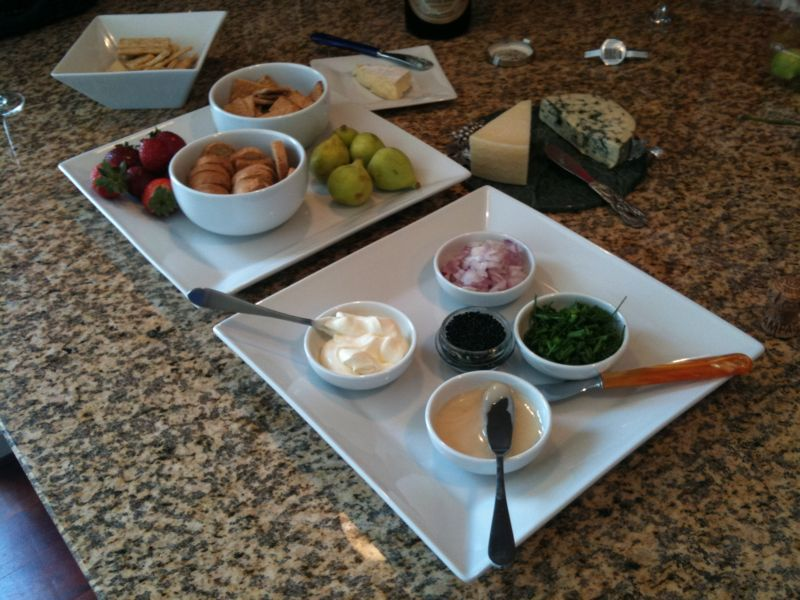

September 6, 2009, 5:55 am
#
Yummy snack

Yummy snack made by my girlfriend.
September 6, 2009, 2:01 am
#
Yummy snack made by my girlfriend.
September 6, 2009, 1:01 am
#
Yummy snack made by my girlfriend.